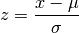
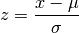

Feature Scaling¶
Here I use Zscore normalization to normalize the design matrix X.

Where, mu is mean, and sigma is the standard deviation.
Here I use Zscore normalization to normalize the design matrix X.

Where, mu is mean, and sigma is the standard deviation.